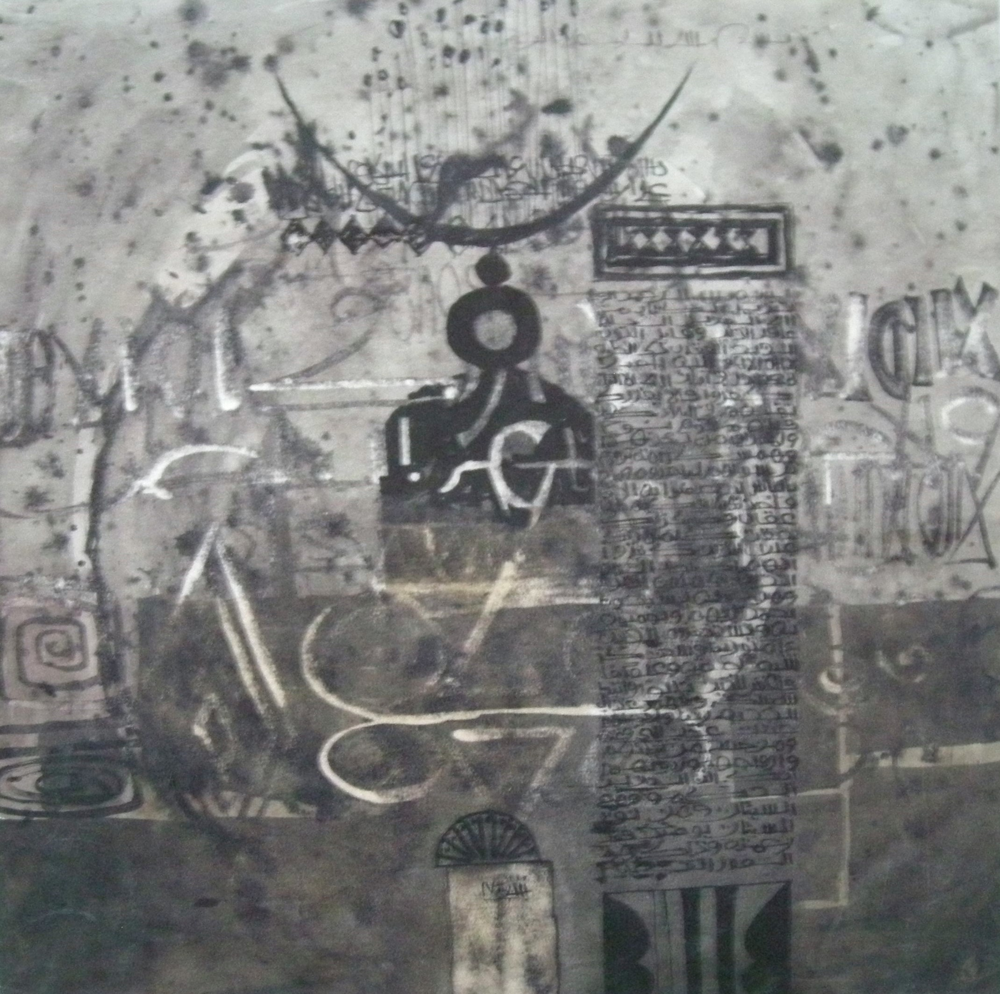

Ahmad Shibrain
1931–2017
Artist Biography
Ahmad Shibrain was born in Berber, Sudan and studied fine arts at the School of Design at the Khartoum Technical Institute, graduating in 1955. In 1957 Shibrain spent a year at the Central School of Art and Design in London, England before returning to Sudan. Shibrain, along with Ibrahim El-Salahi, is considered one of the leading representatives of the School of Khartoum art movement in the 1960s that combined Islamic, African and Western artistic traditions. He painted in a contemporary Hurufiyya style, producing modern art from traditional Arabic script, and over the years also filled senior cultural roles in the political and academic spheres in Sudan. In 1996 he founded the Shibrain Art Foundation in Khartoum to show the work of upcoming artists. Shibrain’s work is held in the Barjeel Art Foundation in the United Arab Emirates, the Dalloul Art Foundation in Lebanon, the National Archives in Washington, USA and the Tate Modern in London, UK. The Tate’s painting was shown in the Nigerian Modernism exhibition 2025/26 as an example of work in other parts of Africa in the later 20th century.

Untitled, 1969